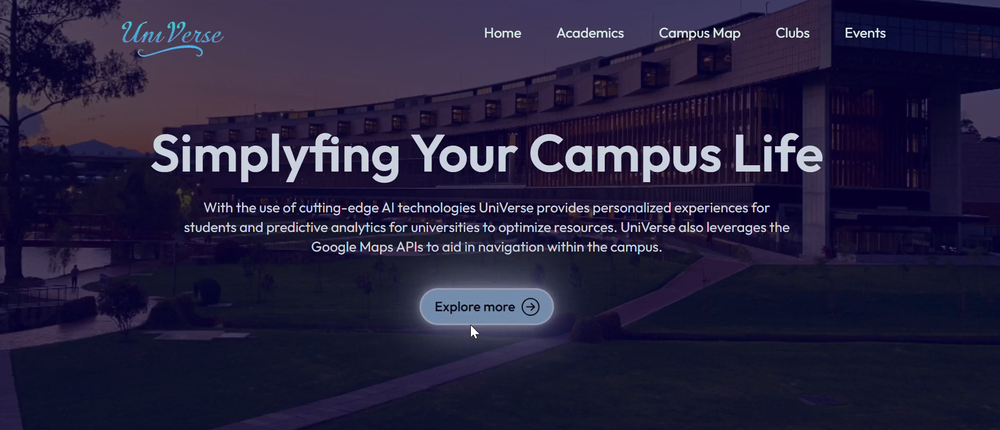
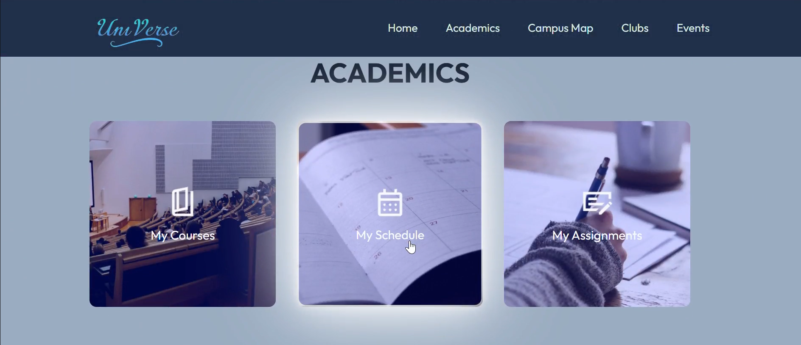
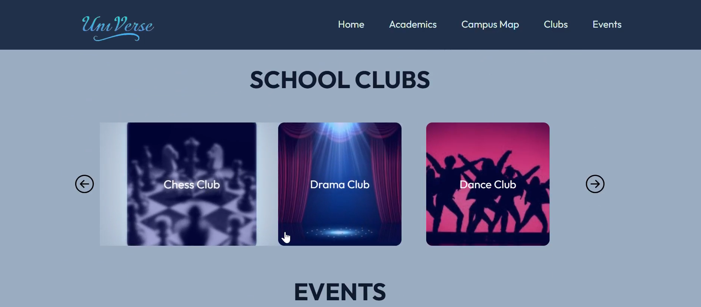
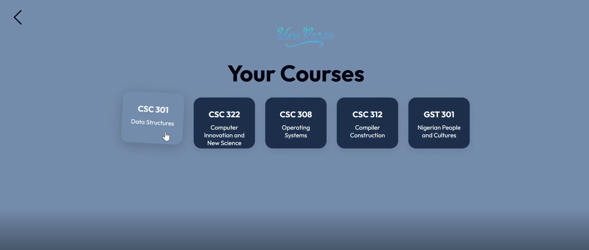
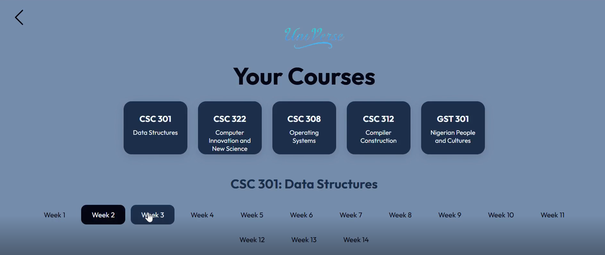
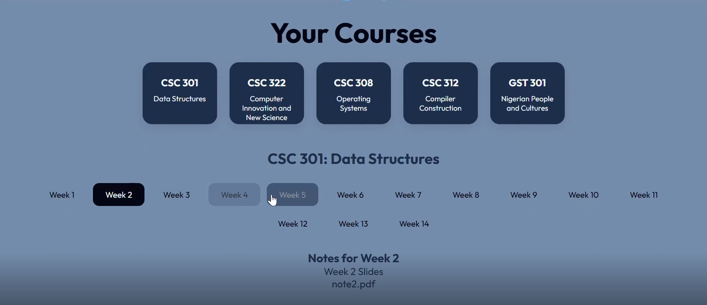

Project Description
UniVerse is a prototype application designed to unify and simplify campus life by bringing essential university services into one intuitive platform. It centralizes class schedules, campus events, maps, and key student resources in a clean, easy-to-navigate interface. Built as a front-end-only concept, UniVerse demonstrates how personalized student experiences and streamlined campus navigation can exist in a single app. It showcases the user journey and core interface interactions for students, lecturers, and administrative staff.
View Live Demo GitHub RepoKey Technologies
- Frontend (UI): HTML, CSS, and React
- Framework: Vite
- Architecture: Frontend-only prototype (no backend, database or ML)
Key Features
- Unified Campus Dashboard: Access class schedules, events, maps, and dining options all in one view.
- Role-Based Interface: Tailored layouts for students, lecturers, and university staff.
- Smart Campus Navigation: Integrated campus map section that simulates route guidance.